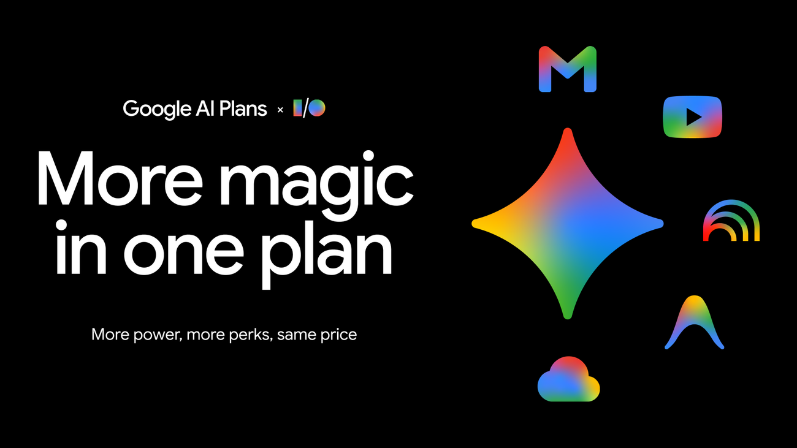

Singapore出现合作新进展
原文：Introducing OpenAI for SingaporeOpenAI把Singapore带到企业团队和投资者面前，重点看合作怎样改变使用路径和产品边界。
Singapore值得看，因为它把发布词落到了具体入口、权限和使用门槛上。
原文Education先把今天的注意力拉住；OpenAI补上另一条线索。今天先看这些具体产品怎么动。
今天值得看的对象是Education、OpenAI、Countries、合作：它们分别牵出合作、智能体能力、记忆扩展，重点不在声量，而在这些产品和评测会怎样改变具体使用路径。
 Singapore的合作
Singapore的合作OpenAI把Singapore带到企业团队和投资者面前，重点看合作怎样改变使用路径和产品边界。
Singapore出现合作新进展 · OpenAI Amazon Bedrock AgentCore Memory的记忆扩展
Amazon Bedrock AgentCore Memory的记忆扩展AWS在Amazon Bedrock AgentCore Memory里扩展记忆能力，说明智能体的长期上下文正在从概念变成开发者可调用的基础能力。
Amazon Bedrock AgentCore Memory加入对话记忆 · AWS Machine Learning Blog Sam Altman的诉讼
Sam Altman的诉讼TechCrunch报道马斯克对 Sam Altman 和 OpenAI 的案件受挫，法律结果暂时落定，但 AI 公司治理争议仍会继续。
马斯克案件受挫，OpenAI 争议还没结束 · TechCrunch AIOpenAI把Education带到相关产品团队和使用者面前，重点看合作怎样改变使用路径和产品边界。
 Google AI · modelsGemini出现智能体能力新进展
Google AI · modelsGemini出现智能体能力新进展Google AI把Gemini放进智能体场景，重点是它能否从演示走向连续任务和真实产品入口。
 AWS Machine Learning Blog · businessAmazon Bedrock AgentCore补上程序化工具调用
AWS Machine Learning Blog · businessAmazon Bedrock AgentCore补上程序化工具调用AWS让Amazon Bedrock AgentCore更稳定地调用外部工具，重点是智能体能否按流程执行任务，而不是停在聊天式回答。
 TechCrunch AI · businessAI agents正在改写搜索入口
TechCrunch AI · businessAI agents正在改写搜索入口TechCrunch把AI agents推到搜索入口前台，搜索正在从关键词输入转向更主动的 AI 任务入口。
 TechCrunch AI · businessAI phishing完成融资，验证具体市场
TechCrunch AI · businessAI phishing完成融资，验证具体市场TechCrunch报道AI phishing完成融资，重点看这笔钱会投向哪个具体产品问题。
 Google AI · modelsGoogle Workspace开始生成内容
Google AI · modelsGoogle Workspace开始生成内容Google AI把Google Workspace放进生成场景，关键是生成结果能否被编辑、追溯和稳定使用。

Google AI · modelsGoogle AI subscriptions订阅能力重新打包Google AI这条指向Google AI subscriptions的订阅变化，用户真正要看的是哪些能力被打包、哪些功能需要额外付费。
OpenAI把Singapore带到企业团队和投资者面前，重点看合作怎样改变使用路径和产品边界。
Singapore值得看，因为它把发布词落到了具体入口、权限和使用门槛上。
原文Google AI把Google Workspace放进生成场景，关键是生成结果能否被编辑、追溯和稳定使用。
Google Workspace值得看，因为它把发布词落到了具体入口、权限和使用门槛上。
原文Google AI这条指向Google AI subscriptions的订阅变化，用户真正要看的是哪些能力被打包、哪些功能需要额外付费。
Google AI subscriptions值得看，因为它把发布词落到了具体入口、权限和使用门槛上。
原文TechCrunch报道马斯克对 Sam Altman 和 OpenAI 的案件受挫，法律结果暂时落定，但 AI 公司治理争议仍会继续。
马斯克输了这一局，但 OpenAI 的治理故事不会因此安静。
原文MIT Tech Review报道马斯克对 Sam Altman 和 OpenAI 的案件受挫，法律结果暂时落定，但 AI 公司治理争议仍会继续。
Janet 看「马斯克案件受挫，OpenAI 争议还没结束（MIT Tech Review）」：先看对象、动作和限制条件。
原文Google AI把Gemini放进智能体场景，重点是它能否从演示走向连续任务和真实产品入口。
Gemini值得看，因为它把发布词落到了具体入口、权限和使用门槛上。
原文AWS在Amazon Bedrock AgentCore Memory里扩展记忆能力，说明智能体的长期上下文正在从概念变成开发者可调用的基础能力。
Amazon Bedrock AgentCore Memory补记忆这事很实在，智能体没上下文就像刚睡醒的同事。
原文AWS让Amazon Bedrock AgentCore更稳定地调用外部工具，重点是智能体能否按流程执行任务，而不是停在聊天式回答。
Amazon Bedrock AgentCore开始认真处理工具调用，说明智能体终于要学会按流程干活。
原文TechCrunch把AI agents推到搜索入口前台，搜索正在从关键词输入转向更主动的 AI 任务入口。
AI agents这事不小，搜索框一变，很多流量游戏就要重新算账。
原文TechCrunch报道AI phishing完成融资，重点看这笔钱会投向哪个具体产品问题。
AI phishing融资只是开场，接下来要证明它不是又一个安全 PPT。
原文TechCrunch提到AI design的视觉识别能力，真正要看的是它在真实环境里能否稳定读懂场景。
AI design值得看，因为它把发布词落到了具体入口、权限和使用门槛上。
原文